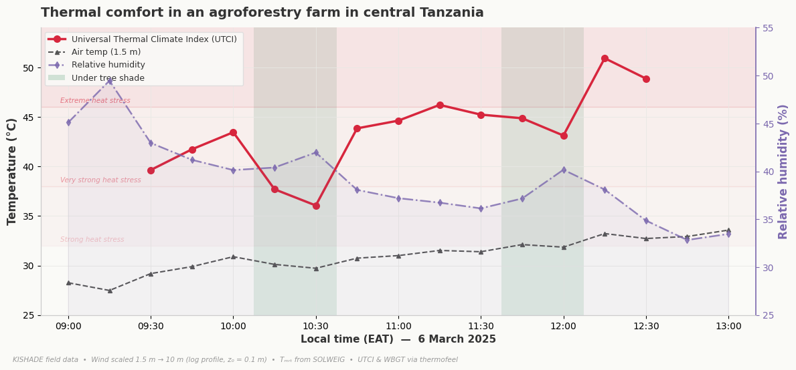

Heat is becoming one of Africa's most serious — and most under-resourced — public health threats. Rising temperatures are killing people, harming pregnancies, accelerating chronic disease, and pushing the very buildings meant to protect health past their physical limits. A low-cost, dignified, and scalable response is within reach: planting and protecting trees in and around rural health clinics, and along the last mile patients walk to reach them. Trees cool the people who walk to care, the workers who staff the clinic, and the medicines stored inside it.
Heatwaves are intensifying — fast, and faster in Africa. The IPCC concludes with high confidence that hot extremes have become more frequent and intense across most land regions, including Africa, and will continue to do so (IPCC, 2021). One analysis attributes 37% of warm-season heat-related deaths between 1991 and 2018 to human-induced climate change (Vicedo-Cabrera et al., 2021). Climate models project ambient temperature increases for southern Africa at roughly twice the global average rate (Wright et al., 2017), and the number of people working in stressful heat conditions across sub-Saharan Africa is projected to rise sharply by mid-century (FAO & WMO, 2026).
The human body crosses its limits quickly. Heat exhaustion can progress to heatstroke and death within hours; repeated exposure damages the kidneys and cardiovascular system, and is increasingly linked to chronic kidney disease in hot regions including sub-Saharan Africa (Chang & Yang, 2023; Flouris et al., 2024). Maternal and newborn health is the most acute concern for primary care: each 1 °C rise is associated with a 4% increase in the risk of preterm birth, climbing to 26% during heatwaves (Lakhoo et al., 2025). Heat also harms mental health — temperatures above 35 °C make people's outlook 25% more negative in lower-income countries (Wang et al., 2025).
The people who most need a clinic are the most vulnerable to heat. Pregnant women, infants, the elderly, and patients with chronic cardiovascular, respiratory, and kidney conditions are precisely the groups whose physiology copes worst with extreme temperatures (Flouris et al., 2024; Lakhoo et al., 2025). Many walk long distances in the open sun to reach rural facilities. Agricultural workers, who form the bulk of Africa's rural population, are among the most heat-exposed occupations on Earth: in the United States — where workers have water breaks, regulatory protection, and emergency medical access — agricultural workers nonetheless face 35 times the risk of heat-related death compared with workers in other industries (Gubernot et al., 2015). Smallholder farmers in sub-Saharan Africa, with none of those safeguards, arrive at clinics already heat-stressed. Women — who carry most of the household burden of caregiving and water collection — face this exposure repeatedly, often while pregnant (Lecoutere et al., 2023).
The clinic itself becomes part of the problem. Research in rural primary health care clinics in Limpopo Province, South Africa, has shown that poor ventilation and lack of air conditioning, combined with waiting times that can stretch to several hours, expose patients and staff to indoor temperatures that pose a direct risk to vulnerable groups (Wright et al., 2017). The infrastructure picture is consistent across the region: only about 40% of healthcare facilities in sub-Saharan Africa have reliable electricity, and roughly 15% have no electricity at all (WHO et al., 2023), making air conditioning, mechanical ventilation, and reliable cold-chain refrigeration impossible at most rural sites. The physical environment of the clinic is itself a health determinant — yet adaptation funding rarely reaches the building site.
Regreening the last mile turns the clinic into part of the cure. The intervention has two complementary components: regreening the clinic compound itself — where shade cools waiting areas, wards, walkways, staff quarters, and medicine storage — and regreening the "last mile", the roads, paths, and tracks patients walk to reach care. Green-infrastructure approaches that integrate tree cover and water management along rural roadsides are already field-tested as climate-resilient development tools (Asian Development Bank, 2024), and translate directly to the patient journey.
A satellite analysis of 220 rural primary health care clinics in Tanzania's Dodoma Region during the hot, dry season of September 2025 found a strong inverse relationship between vegetation cover within a 50-metre buffer of each clinic and land surface temperature (authors' analysis, 2026). Clinics with sparse vegetation recorded surface temperatures of 44–48 °C at the building site; moderately greener clinics ran 4–6 °C cooler. This sits alongside a global meta-analysis of 182 studies showing trees can lower pedestrian-level air temperatures by up to 12 °C through shading and transpiration, with the strongest cooling in hot climates (Li et al., 2024), and an emerging peer-reviewed case for treating trees as a form of living public health infrastructure in low-resource settings (Chiwanga et al., 2026). For a patient walking the last kilometre in 40 °C heat, a pregnant woman waiting outside in midday sun, or a vaccine sitting in a fridge that depends on intermittent power, this is not a marginal gain — it is the difference between safe and unsafe. Shade is recognised as a core environmental adaptation option for extreme heat (FAO & WMO, 2026).
The case for health donors is direct. Regreening rural clinics and their last mile is one of the most cost-effective climate-and-health investments available. It protects pregnant women, newborns, the elderly, chronic-disease patients, and frontline health workers; it stabilises medicine and vaccine storage; it creates an outdoor heat refuge for surrounding communities on hot days; and it delivers biodiversity, water-cycle, and food-security co-benefits at no extra cost. The investment math reinforces the moral case: adaptation in the health sector delivers some of the highest returns of any sector analysed by the World Resources Institute, with an average economic internal rate of return of over 78%, and urban tree planting to reduce heat is highlighted as one of the strongest examples of adaptation whose benefits accrue whether or not extreme events occur (Brandon et al., 2025). Our own analysis (Figure 2) shows that tree shade can lower the heat perceived by people by ~10 °C (UTCI) compared with full-sun exposure. Set against the more than US$21 trillion in climate-related health costs projected for low- and middle-income countries by 2050 (World Bank, 2024), the call is clear.

As heat hardens into the defining health threat of 21st-century Africa, planting trees where the sick come for help is not a soft adaptation. It is one of the most direct lifesaving acts available to us.
References
- Asian Development Bank. (2024). Green Roads Toolkit. ADB Data Library. data.adb.org/dataset/green-roads-toolkit
- Brandon, C., Kratzer, B., Aggarwal, A., & Heubaum, H. (2025). Strengthening the investment case for climate adaptation: A triple dividend approach (Working Paper). World Resources Institute. doi.org/10.46830/wriwp.25.00019
- Chang, C.-J., & Yang, H.-Y. (2023). Chronic kidney disease among agricultural workers in Taiwan: A nationwide population-based study. Kidney International Reports, 8(12), 2677–2689.
- Chiwanga, F. S., Murage, P., Sambalino, F., & Chiwanga, S. E. (2026). Natural tree regeneration as a scalable public health strategy for extreme heat adaptation in low-resource settings. BMJ Global Health [Commentary, in press].
- FAO & WMO. (2026). Extreme heat and agriculture – FAO–WMO joint report. Rome and Geneva. doi.org/10.4060/cd9394en
- Flouris, A., Azzi, M., Graczyk, H., Nafradi, B., & Scott, N. (Eds.). (2024). Heat at work: Implications for safety and health. International Labour Organization.
- Gubernot, D. M., Anderson, G. B., & Hunting, K. L. (2015). Characterizing occupational heat-related mortality in the United States, 2000–2010. American Journal of Industrial Medicine, 58(2), 203–211.
- IPCC. (2021). Climate change 2021: The physical science basis. Cambridge University Press.
- Lakhoo, D. P., Brink, N., Radebe, L., et al. (2025). A systematic review and meta-analysis of heat exposure impacts on maternal, fetal and neonatal health. Nature Medicine, 31(2), 684–694.
- Lecoutere, E., Mishra, A., Singaraju, N., et al. (2023). Where women in agri-food systems are at highest climate risk. Frontiers in Sustainable Food Systems, 7, 1197809.
- Li, H., Zhao, Y., Wang, C., et al. (2024). Cooling efficacy of trees across cities is determined by background climate, urban morphology, and tree trait. Communications Earth & Environment, 5(1), 754.
- Vicedo-Cabrera, A. M., Scovronick, N., Sera, F., et al. (2021). The burden of heat-related mortality attributable to recent human-induced climate change. Nature Climate Change, 11(6), 492–500.
- Wang, J., Guetta-Jeanrenaud, N., Palacios, J., et al. (2025). Unequal impacts of rising temperatures on global human sentiment. One Earth, 8(10), 101422.
- WHO, World Bank, IRENA, & SEforALL. (2023). Energizing health: Accelerating electricity access in health-care facilities. World Health Organization.
- World Bank. (2024). The cost of inaction: Quantifying the impact of climate change on health in low- and middle-income countries. World Bank.
- Wright, C. Y., Street, R. A., Cele, N., et al. (2017). Indoor temperatures in patient waiting rooms in eight rural primary health care centers in Northern South Africa. International Journal of Environmental Research and Public Health, 14(1), 43.